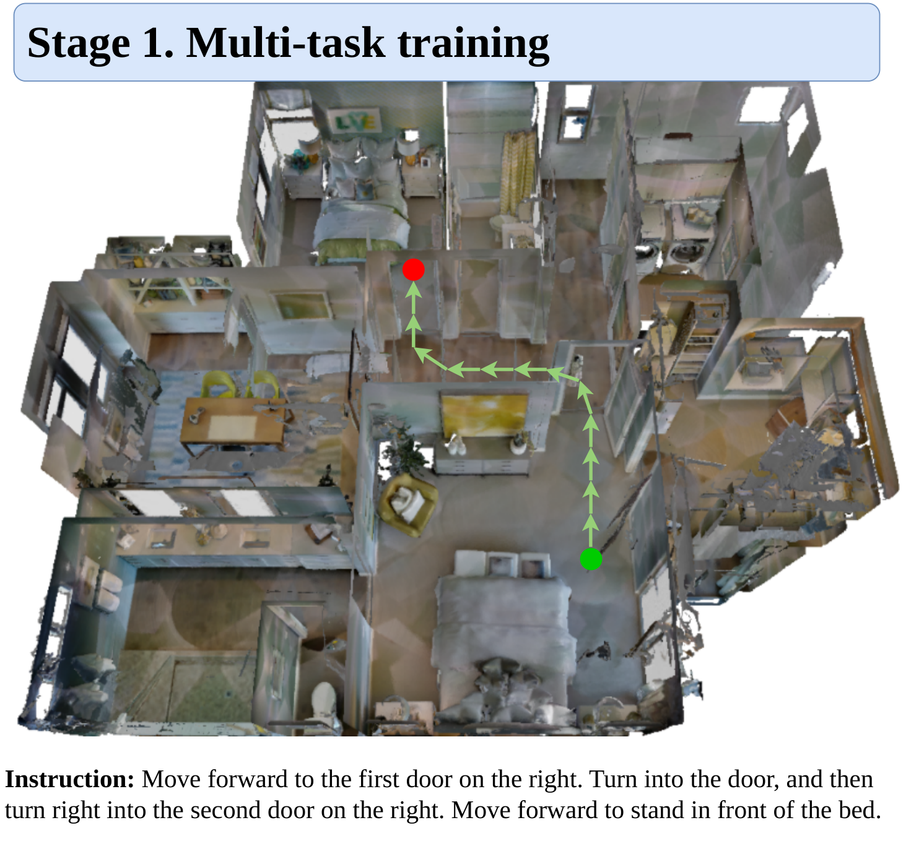
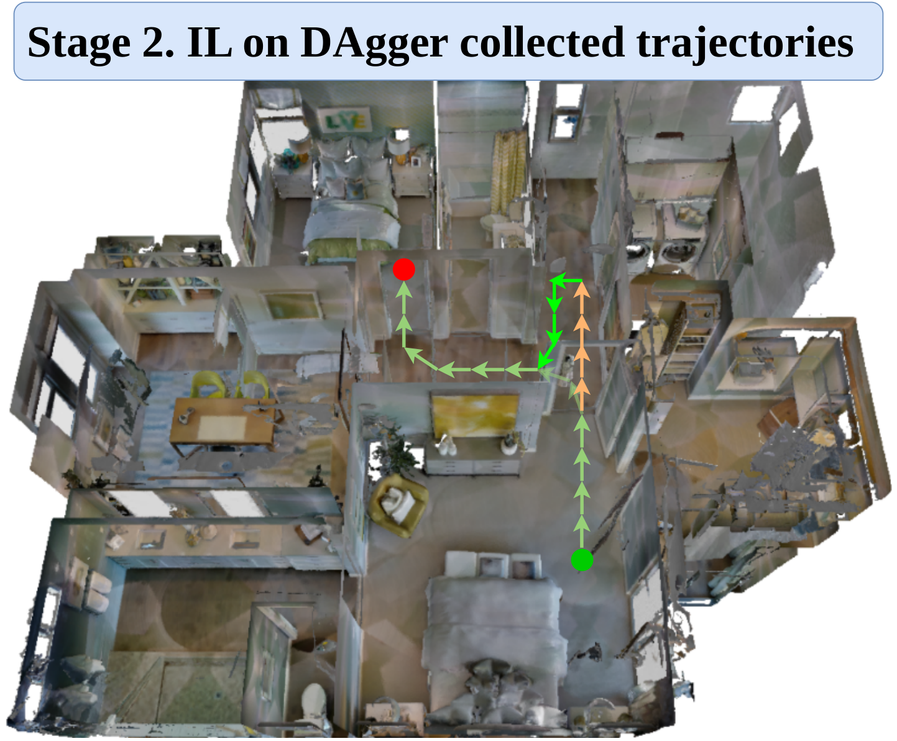
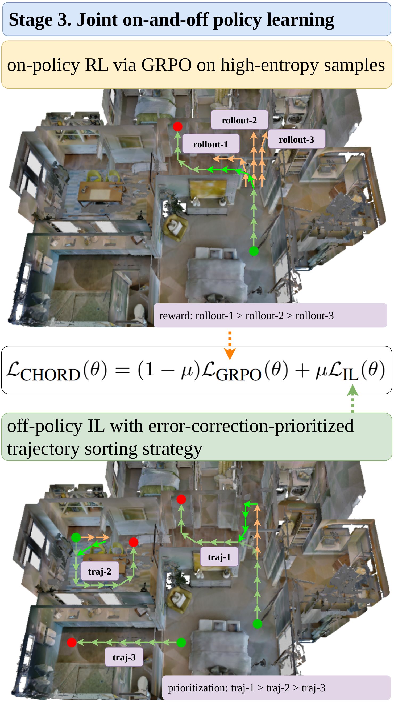
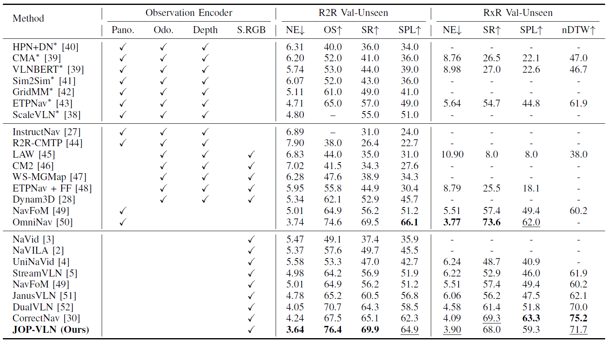

Joy Future Academy
Vision-and-Language Navigation (VLN) necessitates an embodied agent to navigate in the physical world by adhering to natural language instructions. Recent advancements in Vision-Language Models (VLM) have propelled the development of VLM-based VLN methods with two predominant paradigms: (1) imitation learning (IL) on expert demonstrations, followed by the Dataset Aggregation (DAgger) algorithm to bolster error recovery capabilities; (2) reinforcement learning (RL) driven by verifiable rewards to enhance reasoning and exploration. A notable gap is the absence of integration between these two distinct paradigms. This paper introduces JOP-VLN, a novel VLN framework that synergistically combines off-policy imitation learning and on-policy exploration within a three-stage training pipeline. Initially, IL is employed on expert demonstrations to acquire basic navigation skills. Subsequently, the DAgger algorithm is utilized to generate heuristic exploration trajectories, which are then used for imitation learning to improve error recovery capabilities. Finally, a joint on-and-off policy learning framework is implemented, featuring high-entropy trajectory sampling to enhance RL training efficiency and an error-correction-prioritized trajectory sorting strategy for effective error correction. Extensive experiments demonstrate the efficacy of JOP-VLN, achieving success rates of 69.9% and 68.0% on the VLN-CE R2R and RxR benchmarks, respectively, setting a new state-of-the-art on R2R.
JOP-VLN is trained in three progressive stages. The agent first learns basic navigation through multi-task imitation learning, then improves error recovery via imitation on DAgger-collected trajectories, and finally jointly optimizes on-policy RL (GRPO) and off-policy IL under the CHORD objective.

Stage 1. Multi-task training — action prediction and trajectory summarization.

Stage 2. Imitation learning on DAgger-collected trajectories to improve error recovery.

Stage 3. Joint on-and-off policy learning, coupling on-policy GRPO on high-entropy samples with off-policy IL under an error-correction-prioritized sorting strategy.
